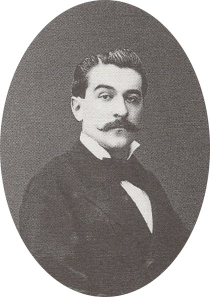
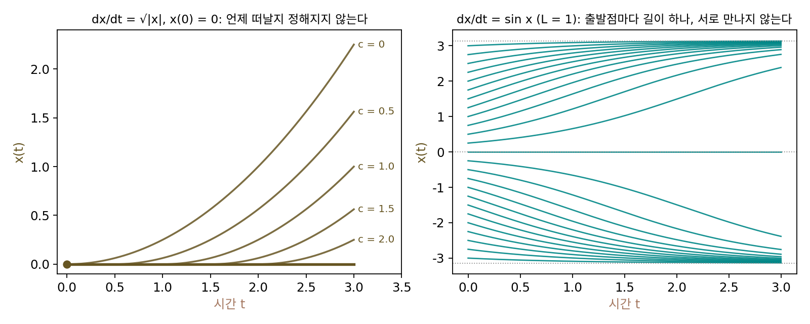
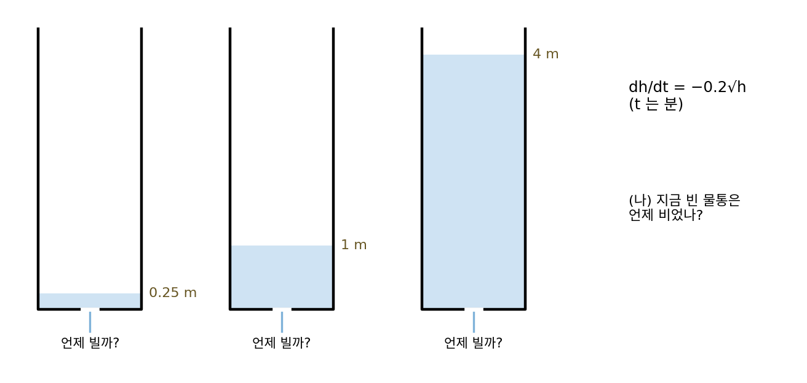
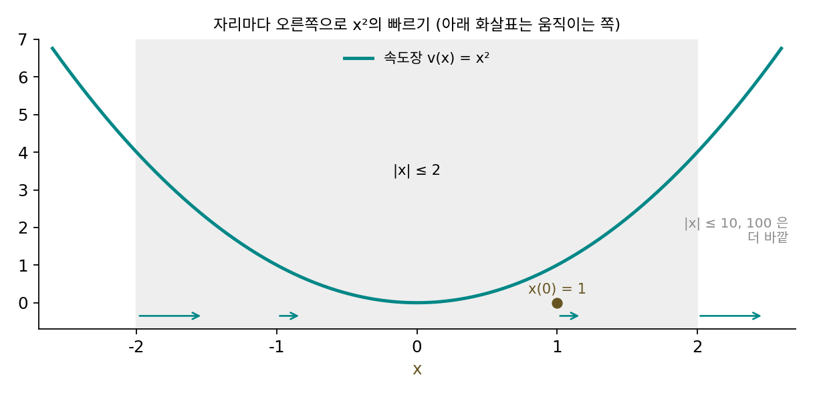
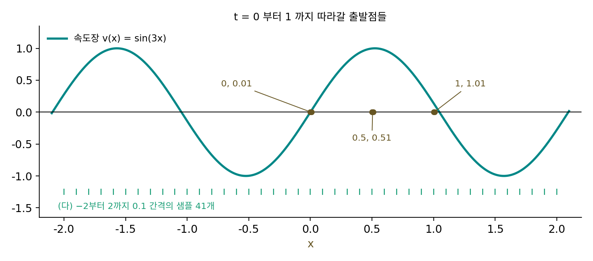

피카르–린델뢰프 정리: 속도장이 립시츠면 흐름이 하나로 정해진다
생성 모델 가운데 플로우 매칭과 디퓨전 모델의 결정론적 샘플러는 노이즈 한 점을 출발점으로 두고, 신경망이 알려 주는 속도를 따라 조금씩 움직여 그림에 닿는다. 자리마다 「이쪽으로 이만큼 빨리」를 정한 것을 속도장이라 하고, 그 속도를 따라가는 길이 미분방정식 dx/dt = v(x)의 해다. 같은 노이즈에서 출발하면 늘 같은 그림이 나와야 하고, 다른 두 노이즈에서 출발한 길이 도중에 만나 하나로 합쳐지면 곤란하다. 그런데 속도를 정해 주기만 하면 길은 저절로 하나로 정해질까? 축약 사상에서 본 「되풀이하면 한 점으로 모인다」는 생각이 여기서도 쓰일 수 있을지 함께 보자.
역사: 코시, 립시츠, 피카르, 린델뢰프

미분방정식의 해가 있고 하나뿐인지를 처음 따진 사람은 코시로 알려져 있다. 그는 1820년대 강의에서 짧은 스텝으로 꺾은선을 이어 해에 다가가는 방법을 썼지만, 그 내용은 다른 사람의 책을 통해 불완전하게 전해졌다. 립시츠는 1868년에 코시를 모른 채 같은 물음을 다시 풀었고, 그때 함수에 건 조건이 립시츠 조건이다. 한편 이탈리아의 주세페 페아노(Giuseppe Peano)는 속도가 연속이기만 해도 해가 적어도 하나는 있음을 보였다. 하나뿐이라는 말은 연속만으로는 나오지 않는다.
프랑스의 에밀 피카르(Émile Picard)는 1890년 『순수·응용 수학지(Journal de Mathématiques Pures et Appliquées)』에 긴 논문 「편미분방정식 이론과 연속 근사법에 대한 논고」를 실었다. 그는 이 논문에서 해를 곧바로 찾는 대신 대충 짐작한 길을 미분방정식에 넣어 고친 길을 얻고, 고친 길을 다시 넣기를 되풀이하는 방법을 체계적으로 썼다. 핀란드의 에른스트 린델뢰프(Ernst Lindelöf)는 1894년 파리 과학 아카데미에 낸 짧은 글과 같은 해 같은 학술지에 실은 논문에서, 이 되풀이가 상미분방정식에서 얼마나 긴 시간 동안 통하는지를 다듬었기 때문에, 지금 이 정리에는 두 사람의 이름이 붙어 있다. 프랑스에서는 코시–립시츠 정리라고 부른다.

미분방정식은 지금은 짧은 스텝을 이어 컴퓨터로 돌리면 길이 나오잖아요. 해가 하나뿐인지까지 따질 필요가 있었어요?

짧은 스텝으로 꺾은선을 잇는 건 코시가 1820년대에 쓴 방법이었어요. 그 꺾은선으로 「해가 하나뿐이다」까지 말할 수 있을까요?

음, 스텝을 줄일 때 꺾은선이 한 곡선으로 다가간다는 걸 보여야 하는데… 페아노는 속도가 연속이기만 해도 해가 적어도 하나 있다고 했잖아요. 적어도 하나라면, 꺾은선이 어느 해로 다가갈지는 모르는 거네요.

그리고 1890년의 피카르는 되풀이를 손으로 했어요. 짐작한 길을 넣고 적분해 고친 길을 얻는 일을, 식을 적분하는 손 계산으로요.

적분을 매번 손으로요… 그러면 되풀이가 정말 모인다는 보장이 먼저 있어야 시작할 엄두가 났겠네요.

그 보장에 쓰인 것이 립시츠 조건이고, 린델뢰프는 그 보장이 얼마나 긴 시간 동안 통하는지를 다듬었어요.

그러면 립시츠 조건이 깨진 속도장에서는, 같은 출발점에서 해가 정말로 둘 이상 나오는 예가 있어요?
√|x| 의 속도장에서 길이 갈라진다
이 장 처음(립시츠 연속 절)에서 비교한 √|x|를 다시 꺼내 이번에는 속도로 쓰자. 속도장 dx/dt = √|x|에서는 자리가 x인 점이 √|x|의 속도로 오른쪽으로 간다. 이 속도장은 립시츠 연속이 깨지는 곳이 한 점(x = 0)뿐이라, 그 한 점에서 무슨 일이 생기는지만 따로 볼 수 있어서 골랐다. 비교하기 위해, √|x|와 마찬가지로 x = 0에서 속도가 0이지만 립시츠 상수는 1인 속도장 dx/dt = sin x도 함께 본다.
x(0) = 0에서 출발하면 √|x|의 경우 속도가 0이라 움직이지 않으므로, 가만히 있는 길 x(t) = 0이 해다. 그런데 x(t) = t²/4를 미분하면 t/2이고 √(t²/4)도 t/2이므로, 이 길도 해다. 그뿐 아니라 시각 c까지 가만히 있다가 그 뒤에 (t − c)²/4로 떠나는 길도 모두 해다. c = 0.5인 길은 t = 2에서 자리 0.5625, 속도 0.75이고 √0.5625도 0.75다. 같은 점에서 출발했는데 언제 떠날지를 미분방정식이 정해 주지 않는다. 컴퓨터로 짧은 스텝(Δt = 0.001)을 이어 풀면, 0에서 출발하면 끝까지 0이지만 10⁻¹²에서 출발하면 t = 2에 0.9941까지 간다. 눈에 보이지 않는 차이가 전혀 다른 길을 고른다.
sin x의 경우 0에서 출발한 길은 0에 머무는 것 하나뿐이다. 10⁻⁶에서 출발하면 t = 2에 0.000007이 되어, 처음 차이가 조금 커질 뿐 갑자기 다른 길로 갈라지지 않는다.

차이는 0 근처의 두 점 사이 기울기에 있는데, √|x|는 0과 h 사이의 기울기가 1/√h로 h = 10⁻⁴이면 100이다. 0에 아주 가까운 점은 0에 있는 점보다 터무니없이 빨리 떠날 수 있어서, 「0에 머무는 길」과 「살짝 비켜 있다가 떠나는 길」이 구별되지 않는다. sin x는 두 점의 속도 차이가 거리의 1배를 넘지 않으니 가까운 두 점은 거의 같은 속도로 움직이고, 처음 간격은 많아야 eLt배로만 벌어진다. t = 2이면 e² ≈ 7.39배이므로 간격 10⁻⁶은 7.39 × 10⁻⁶을 넘지 못하고, 실제로 잰 간격은 7 × 10⁻⁶이었다.
이제 피카르의 되풀이를 보자. 미분방정식을 적분으로 바꾸면 x(t) = x₀ + ∫₀ᵗ v(x(s)) ds인데, 오른쪽에 길 하나를 넣으면 새 길이 나오니 길을 길로 보내는 사상이 된다. 가장 쉬운 dx/dt = x, x(0) = 1로 해 보자. 처음 짐작을 「가만히 1」로 두면 다음 길은 1 + t, 그다음은 1 + t + t²/2, …이다. t = 1에서의 값은 1, 2, 2.5, 2.6667, 2.7083, 2.7167, 2.7181로 참값 e = 2.7183에 다가간다. 짐작을 넣고 고치기를 되풀이하는 것이 바로 축약 사상의 되풀이다. 속도장의 립시츠 상수가 L이면, 길이 T인 시간 구간에서 이 사상은 두 길 사이의 가장 큰 차이를 많아야 LT배로 바꾼다. LT < 1이 되게 짧은 구간을 잡으면 축약이어서 그 구간에서 해가 꼭 하나이고, 그 끝에서 다시 출발하기를 이어 가면 더 긴 시간도 덮는다.
이렇게 속도장이 립시츠 연속이면 처음 자리를 정한 해가 있고 꼭 하나뿐이라는 정리를 피카르–린델뢰프 정리 (속도장이 립시츠면 출발점마다 길이 하나 / Picard–Lindelöf theorem)라 한다. 두 길 사이의 간격에 대한 약속도 함께 따라온다(그론월 부등식).
두 길의 간격을 위아래로 묶는 그론월 부등식 e−Lt‖x(0) − y(0)‖ ≤ ‖x(t) − y(t)‖ ≤ eLt‖x(0) − y(0)‖의 양 끝은 서로 다른 약속이다. 오른쪽 끝은 가까운 두 점이 많아야 eLt배로만 멀어진다는 약속이다. 왼쪽 끝은 처음에 떨어져 있던 두 점이 유한한 시간 안에 간격 0, 곧 한 점이 될 수 없다는 약속이다. 처음 간격이 0이면 언제나 0이므로 해가 하나라는 말도 여기서 나온다.
ML에서: 플로우 매칭의 길은 서로 엇갈리지 않는다
플로우 매칭은 노이즈 분포에서 그림 분포로 가는 속도장 vθ(x, t)를 신경망으로 배우고, 그림을 만들 때 이 속도장을 따라 미분방정식을 푼다. 이 신경망이 행렬 곱과 립시츠 연속인 활성화 함수(ReLU, SiLU 같은)로만 이루어져 있으면, 스펙트럼 노름의 곱이 립시츠 상수를 묶는다. 그러면 피카르–린델뢰프 정리에 따라 노이즈 한 점은 그림 한 장으로 가는 길 하나를 갖고, 서로 다른 두 노이즈의 길은 도중에 만나지 않는다. 만난다면 그 만난 점에서 거꾸로 풀었을 때 길이 둘로 갈라져야 하는데, 정리가 그것을 막는다. 리키 첸(Ricky T. Q. Chen)과 동료들이 2018년 NeurIPS에 낸 「신경 상미분방정식(Neural Ordinary Differential Equations)」도 같은 정리에 기대어, 신경망을 속도장으로 쓰는 모델의 해가 잘 정해진다고 적었다.
문제 16. 빈 물통은 언제 비었나
바닥에 작은 구멍이 난 물통의 물 높이 h(m)는 토리첼리의 법칙에 따라 dh/dt = −0.2√h로 줄어든다(t는 분). (가) 높이 1 m에서 시작하면 2.5분, 5분, 7.5분 뒤의 높이는? 언제 비는가? (나) 지금 물통이 비어 있다. 언제 비었는지 알 수 있는가? (다) 처음 높이 0.25 m, 1 m, 4 m인 물통은 각각 언제 비는가? 시간을 거꾸로 돌리는 미분방정식의 해는 몇 개인가?

(가)는 풀면 h(t) = (1 − 0.1t)²이라서 2.5분에 0.5625, 5분에 0.25, 7.5분에 0.0625 m, 10분에 비어요. (나)는 미분방정식을 거꾸로 풀면 되죠. 지금 높이 0에서 시간을 거꾸로 돌리면 언제부터 비어 있었는지 나올 거예요.
(다)의 세 물통은 지금 모두 빈 상태로 끝나죠. 20분 뒤에 빈 물통 셋을 보고 어느 것이 어느 것인지 가릴 수 있나요?

0.25 m 물통은 5분에, 1 m는 10분에, 4 m는 20분에 비어요. 20분 뒤에는 셋 다 높이 0이에요. 거꾸로 풀면 0에서 출발한 길이 「계속 0」일 수도 있고 「5분 전, 10분 전, 15분 전에 물이 있었음」일 수도 있어요. 하나로 안 정해져요.
속도 −0.2√h가 √|x|와 같은 꼴이라 그래. h = 0 근처에서 √h의 미분 1/(2√h)가 끝없이 커져. h = 0.01이면 5, 0.0001이면 50. 앞에 붙은 0.2는 이 미분값을 0.2배 할 뿐이고. 립시츠가 아니라서 길이 갈라지는 거야.
그런데 물이 차 있는 동안에는 거꾸로 풀어도 하나로 정해지죠?
네. h가 0에서 떨어져 있는 동안은 √h가 립시츠라 길이 하나예요. 길이 갈라지는 건 물이 다 빠진 그 점뿐이에요.

그럼 물이 유한한 시간에 다 빠진다는 것부터가 립시츠가 아니라는 신호야?

응. 높이가 다른 세 물통이 높이 0 한 점으로 합쳐졌잖아. 서로 다른 출발점이 한 점으로 합쳐지는 건 그론월 부등식의 왼쪽 끝을 어기는 일이야. 립시츠 속도장이었다면 물통은 영원히 조금씩 비어 갈 뿐 완전히 비지 않았을 거고.

다 녹은 아이스크림 자국만 보고는 언제 꺼내 놨는지 모르는 거랑 같네요. 녹는 중이면 크기로 짐작할 수 있는데요.
문제 17. 유한한 시간에 무한대로
dx/dt = x², x(0) = 1의 해는 x(t) = 1/(1 − t)다. (가) t = 0.5, 0.9, 0.99에서 x는? (나) 속도장 x²은 |x| ≤ 2, 10, 100에서 각각 립시츠 상수가 얼마인가? 수직선 전체에서는? (다) 피카르–린델뢰프 정리는 이 해에 대해 무엇을 보장하고 무엇을 보장하지 않는가?

(가)는 2, 10, 100이에요. t = 1에서 무한대가 돼요. 짧은 스텝으로 이어 풀어 봤더니 Δt = 0.01이면 t ≈ 1.09에, 0.001이면 1.011에 10⁸을 넘어요. 그런데 x²은 매끄러운 다항식이니까 피카르–린델뢰프 정리가 성립하고, 해가 영원히 있다고 해야 하지 않나요?
(나)를 먼저 계산해 볼까요?
미분이 2x니까 |x| ≤ R에서 2R, 곧 4, 20, 200이에요. 수직선 전체에서는 립시츠가 아니네요. 문제 2의 x²이랑 같은 함수예요.
그러면 정리는 「x가 어떤 범위 안에 머무는 동안은」만 말할 수 있겠네. |x| ≤ 2 안에서는 L = 4라 해가 하나로 정해지고.
x가 2를 넘으면?

x가 2를 넘는 t = 0.5부터는 더 넓은 범위의 큰 L로 다시 출발해야 해. 그런데 범위를 넓힐 때마다 갈 수 있는 시간이 짧아지니까… 아무리 이어도 t = 1을 넘지 못해.
정리하면 정리가 보장하는 것은요?

해가 있는 동안에는 하나뿐이라는 것, 그리고 립시츠 상수가 정해지는 범위 안에서는 해가 있다는 것까지요. 「영원히 있다」는 속도장이 수직선 전체에서 립시츠일 때만 나와요. 피카르의 되풀이가 짧은 구간에서만 축약이었던 이유가 이거네요.

짧은 스텝으로 이어 풀 때 스텝을 줄일수록 터지는 시각이 1에 다가가는데, 어떤 스텝으로도 1을 넘어 계속 갈 수는 없는 거군요. 이자가 이자를 낳는 정도가 잔고에 비례하는 게 아니라 잔고의 제곱에 비례하면, 유한한 날에 잔고가 무한대가 되는 것과 같아요.
문제 18. 두 샘플은 얼마나 멀어질 수 있나
1차원 속도장 v(x) = sin(3x)를 t = 0부터 1까지 따라간다. (가) 이 속도장의 립시츠 상수는? 처음 간격 0.01인 두 샘플이 t = 1에 가질 수 있는 간격의 범위를 그론월 부등식으로 구하라. (나) 두 샘플이 0과 0.01, 0.5와 0.51, 1과 1.01에서 출발하면 t = 1의 간격은 각각 얼마인가? (다) −2부터 2까지 0.1 간격의 샘플 41개를 흘리면 순서가 바뀌는가?

(가)는 미분이 3cos(3x)니까 L = 3이에요. 간격은 0.01 × e³ = 0.2009까지 벌어질 수 있어요. 간격이 줄어드는 경우는 립시츠랑 상관없으니까, 운 나쁘면 0이 돼서 두 샘플이 한 점에서 만날 수도 있겠죠.
(나)를 돌려 보고, 간격이 가장 작아지는 경우를 찾아보세요.

0과 0.01은 0.19502로 벌어지고, 0.5와 0.51은 0.00105, 1과 1.01은 0.00050으로 좁아져요. 그런데 가장 좁은 0.00050이 딱 0.01 × e−3 = 0.00050이에요. 줄어드는 간격에도 하한이 있었네요.
부등식 왼쪽 끝이 그거야. 처음 간격이 e−3배보다 작아질 수 없으니 0이 될 수 없어.
그런데 1과 1.01은 왜 딱 그 하한에 붙었어?
둘 다 속도가 0인 점 π/3 = 1.047 쪽으로 빨려 들어가는데, 거기서 속도장의 기울기가 −3이라 간격이 가장 빠르게 줄어도 e−3배까지야. 0과 0.01은 기울기가 +3인 점에서 밀려나니까 거의 e³배로 벌어지고.
(다)는요? 이게 플로우 매칭에는 어떤 뜻이죠?
41개를 흘려도 순서가 그대로이고, 가장 좁은 간격이 0.00499예요. 1차원에서 순서가 그대로라는 건 길끼리 엇갈리지 않는다는 뜻이에요.
길이 엇갈리지 않는다는 걸 노이즈와 그림 사이에서 말하면요?
플로우 매칭의 속도장이 립시츠면 노이즈의 서로 다른 두 점은 서로 다른 두 그림으로 가고, 간격이 e−L배 아래로는 줄지 않아요. 그 대신 L이 크면 아주 가까운 두 노이즈가 아주 다른 그림이 될 수도 있어요.
그러면 립시츠 상수는 「생성 모델이 비슷한 노이즈를 얼마나 비슷한 그림으로 보내나」를 정하는 숫자이기도 하네요. 같은 반 친구 둘이 졸업 뒤 얼마나 다른 길을 가는지에 위아래 한도가 있다는 얘기처럼 들려요.